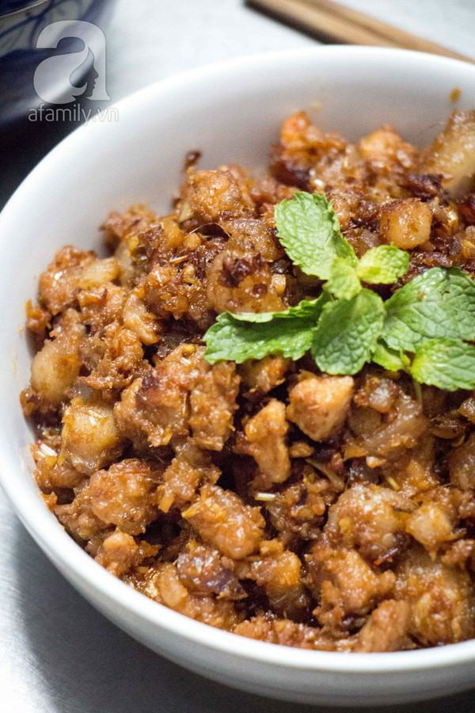

Cùng bắt tay làm thử thôi nào!
Nguyên liệu :
Cách làm
- Hành khô và sả, chúng ta băm nhuyễn.
- Ớt thì một phần băm nhuyễn, một phần xắt khoanh.
- Thịt ba rọi rửa sạch, xắt lát mỏng, ướp với mắm ruốc pha loãng, hành, sả và ớt đã băm nhuyễn trong 15 phút.
- Mắm ruốc, chúng ta cho vào chén hoà với nước đun sôi để nguội (hoặc nước lọc) rồi khuấy đều.
Kế tiếp, chúng ta đặt chảo lên bếp, đợi cho nóng chảo một lát rồi cho dầu ăn vào. Chờ đến khi dầu ăn sôi thì cho hành khô và sả băm vào phi cho vàng, thơm. Sau đó, chúng ta cho thịt ba rọi vào xào đều tay cho thịt săn lại.
Tiếp theo, chúng ta cho Mắm ruốc đã được pha loãng vào đun sôi, nêm gia vị cho vừa ăn rồi vặn nhỏ lửa lại, chờ cho đến khi Mắm ruốc thấm vào miếng thịt, kẹo lại là được.
- Cuối cùng, chúng ta cho phần ớt xắt khoanh vào chảo thịt xào Mắm ruốc, rồi múc ra dĩa, kèm dưa leo, cà chua xắt lát, trình bày cho đẹp mắt. Món này ăn với cơm nóng rất ngon và trở thành món ăn hang ngày ở các gia đình, quán ăn, nhà hàng, khách sạn,… ở Việt Nam.
(Bí quyết nấu ăn: Khi chọn Mắm ruốc ngon, các bạn cần chú ý là mắm phải có màu đỏ sẫm, có mùi thơm lừng và đặc biệt là phải có độ mịn màng tuyệt đối, do trong quá trình sản xuất, đã được loại bỏ hoàn toàn cát, sạn và tạp chất như Mắm ruốc Trí Hải)